Tempering the softmax, one chain at a time.
Three ways to rescale log-importance ratios before the batch softmax — how each one bends per-chain sensitivity, and what happens when we actually ablate the edges they disagree on.
Three transforms of the per-chain log-ratio, one shared softmax.
All three methods share the same setup: $N$ continuations $y^{(i)}$ drawn from the clean proposal $q$, each with a per-chain log-importance ratio
$$ \ell_i \;=\; \log\frac{p(y^{(i)})}{q(y^{(i)})} \;=\; \sum_{t=1}^{T_i}\Big[\log p(y^{(i)}_t \mid y^{(i)}_{\lt t}) - \log q(y^{(i)}_t \mid y^{(i)}_{\lt t})\Big], $$and a stable batch softmax
$$ w_i \;=\; \frac{\exp(s_i - \max_j s_j)}{\sum_{k} \exp(s_k - \max_j s_j)}. $$The three variants differ only in the transform $s_i = f(\ell_i)$.
snis — self-normalised IS$$ \boxed{\; s_i \;=\; \ell_i \;} $$
Unbiased in the limit; collapses to a one-hot weight on long chains because $\mathrm{Var}(\ell_i) = \Theta(T_i)$.
geometric_mean — per-chain length normalisation$$ \boxed{\; s_i \;=\; \frac{\ell_i}{\max(T_i,\,1)} \;} $$
Replace the product of per-token ratios with their geometric mean. Decouples scale from chain length, but over-corrects on long chains — softmax inputs collapse to $\approx 0$ and weights sit at $1/N$ within $10^{-4}$.
tempered_snis — fixed-temperature SNIS$$ \boxed{\; s_i \;=\; \frac{\ell_i}{T}, \quad T > 0 \text{ scalar} \;} $$
$T = 1$ recovers SNIS; $T \to \infty$ recovers uniform weights. $T$ is one scalar for the whole batch, not tied to chain length. Recommended: $T \approx \mathrm{std}(\ell_i)$ — in this project, $T \approx 5$.
Side-by-side
| method | transform $s_i$ | $N_{\text{eff}}$ on long chains | unbiased for $P_p$? | knob tied to $T_i$? |
|---|---|---|---|---|
snis |
$\ell_i$ | collapses $\to 1$ | yes (asymptotically) | — |
geometric_mean |
$\ell_i / T_i$ | collapses $\to N$ (uniform) | no | yes (per-chain) |
tempered_snis |
$\ell_i / T$, fixed $T$ | tunable via $T$ | no | no (global scalar) |
Endpoints of tempered_snis: $T = 1 \Rightarrow$
snis; $T = T_i$ per chain $\Rightarrow$
geometric_mean. So geometric_mean is the
per-chain special case of tempering, and snis is tempering
with $T = 1$. tempered_snis is the only one of the three
whose scale you can actually tune to match the observed log-weight
spread.
geometric_mean effectively applies.
How each variant reacts to per-chain threshold — and where sensitivity disappears.
For each tempering we plot three things across ablation sparsity: effective sample size $N_{\text{eff}}$, normalised per-chain weights at a low sparsity cutoff, and per-chain weights at a high sparsity cutoff. The contrast between the two chain panels is the sensitivity story — how dramatically the softmax re-weights as we tighten the threshold.
- Temp. 5 — chains are sensitive to threshold, but collapse into a one-hot on the high-threshold panel.
- Temp. 20 — keeps spread across thresholds; no one-hot collapse.
- Temp. 100 — nearly flat response; the weights barely move.
- Geometric mean — effectively uniform across sparsities. Chain panel is identical at any threshold, so we show it once.
tempered_snis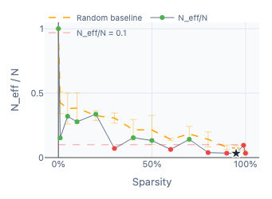
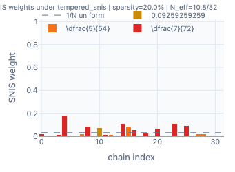
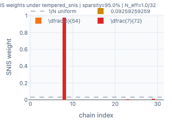
tempered_snis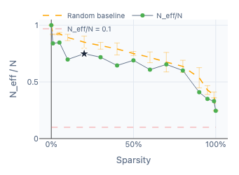
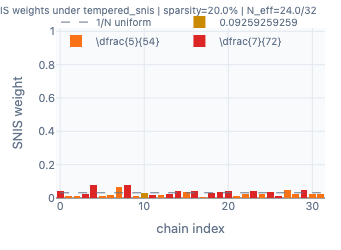
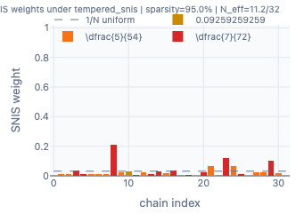
tempered_snis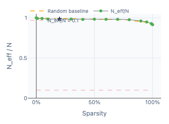
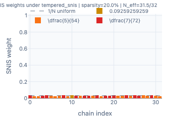
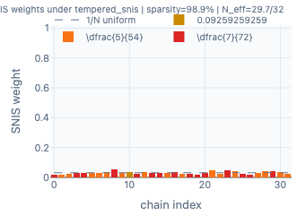
geometric_mean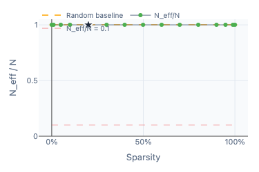
What actually happens to correctness when we ablate the edges each variant disagrees on.
§ 1 · Resample correctness across sparsity
For each mask, install it at the given sparsity, regenerate $N=32$
chains from the masked model at training temperature, and count how
many answer correctly. The four reward_gap masks only
differ in their IS transform; a fifth mask trained with
answer_kl (thought-anchors suppression) is included as a
sanity baseline with a different objective.
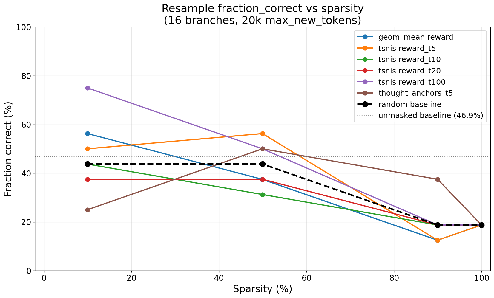
temp. 100 at 10% sparsity lands near 75% — every other mask sits below 57% at the same sparsity. The spike is not monotone in $T$ and isolates to a specific set of ablated edges (see §3).§ 2 · Most pairs of masks are nearly colinear
We compare per-pair scores of the four reward_gap masks
plus the answer_kl baseline, all sharing the same causal
support of 1,035 sentence pairs. In the plain scatter, points cluster
within a narrow band around a common mean ($\approx 0.063$), so
proximity to the $y=x$ line mostly means "both axes are near-constant".
To remove the trivial scale we subtract each mask's mean and rescale the
$y$ axis by
so both axes have matched magnitudes. After rescaling, the diagonal represents genuine rank/direction agreement.
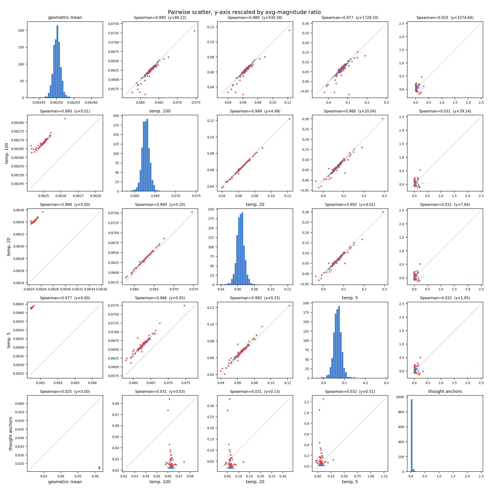
reward_gap family the data really does sit on $y=x$ once the trivial scale is removed; thought anchors (answer_kl) is genuinely orthogonal — the point clouds in the last row/column are round, not diagonal.Spearman $\rho \ge 0.977$ between any two reward_gap
masks; $|\rho| < 0.04$ between the answer_kl mask and
any of them. Choice of IS temperature moves the tails of the same
ranking; choice of objective changes which pairs the mask cares
about at all.
§ 3 · Where the masks disagree — an interactive walk
Even inside the high-correlation reward_gap family, a
handful of pairs swing their within-mask percentile by 70+ points
across different tempering $T$s. Select any pair below to see the two
sentences and where each mask places the pair in its 1,035-pair
distribution.
Takeaways from the disagreements
- Restatement pairs are amplified by low $T$ (and by
thought anchors). Pair (10, 1) — two near-identical
restatements of the problem setup — sits at the 7th percentile under
temp. 100 and jumps to the 98th under temp. 5. Under
answer_klit is the top-scoring pair in the whole mask (100th pct, raw 2.44). Pair (14, 10), structurally the same kind of restatement, swings the opposite way (38 → 2). Low-$T$ leverage here is idiosyncratic to individual chain log-ratios. - Case-analysis pairs move together. (36, 0), (36, 20), (47, 41), (26, 20) all connect a concrete full-house case statement back to the setup or an earlier case. Tempering pushes them from mid to upper quartile as $T$ drops; thought anchors mostly agrees that they matter, though the ranking differs.
- Thought anchors picks a disjoint set. Pairs like
(25, 19), (20, 16), (38, 5) sit at or below the 60th percentile in
every
reward_gapmask but at the 86–98th percentile underanswer_kl. Whateveranswer_klis tracking for these pairs is largely invisible toreward_gap.
Where do the disagreements sit in each mask's distribution?
For the top-12 outliers above, counting how many fall in each mask's bottom 10%, middle 80%, and top 10%:
| mask | bottom 10% | middle 80% | top 10% |
|---|---|---|---|
| geometric mean | 3 | 9 | 0 |
| temp. 100 | 1 | 11 | 0 |
| temp. 20 | 0 | 12 | 0 |
| temp. 5 | 2 | 9 | 1 |
| thought anchors | 0 | 5 | 7 |
Inside the reward_gap family the disagreements are
overwhelmingly in the middle of each distribution
(≥ 90% of outliers at pct 10–90). Bottom-10% sets overlap heavily:
104 entries each, with pairwise intersections of 93–103 / 104. Thought
anchors is the exception — its disagreements sit mostly in its
top 10%.
Why does temp. 100 spike at 10% sparsity?
At 10% sparsity each mask ablates the edges whose scores fall in its bottom 104. Temp. 100 and temp. 20 differ on exactly two pairs: temp. 100 uniquely ablates (10, 1); temp. 20 uniquely ablates (34, 8). Everything else is shared. Pair (10, 1) is the #1 row in the disagreement widget above — near-identical restatements of the problem setup: